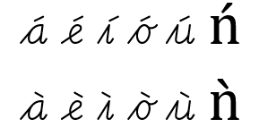
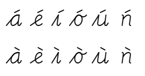

Cogncur Documentation - Technical features & requirements
This guide explains how Cogncur works on a technical level. This guide may be useful for people wanting to use Cogncur a not-yet-documented application, people who want to contribute a new Application Guide, for font designers wanting to make modifications to Cogncur.
In this guide you'll find the following topics:
OpenType Features & Requirements
Contextual alternates (calt)
Cogncur uses contextual alternates (calt) to add the joins between letters, as well as the entry strokes and exit strokes. Contextual alternates are absolutely essential.
Most fonts use the 'calt'-table to invoke a set of 'single substitution'-tables. Cogncur uses the 'calt'-table to invoke a set of 'multiple substitution'-tables. As this combination of features is rare, you should test an application specifically with Cogncur before concluding that it will work with Cogncur.
In applications that support contextual alternates, contextual alternates can usually be enabled and disabled by the end user.
cursive
Contextual alternates ON
cursive
Contextual alternates OFF
Stylistic sets (ssXX)
OpenType fonts can contain up to 20 stylistic sets. Stylistic sets are never enabled by default; they need to be enabled manually by the end user.
For Cogncur, it is highly desirable that the application allows for multiple stylistic sets to be enabled simultaneously. Cogncur uses stylistic sets to allow you to change the appearance of (groups of) letters. These changes are often orthogonal to each other. Many teachers want Cogncur to match with a typeface that is used in existing curriculum materials, and they will probably require multiple stylistic sets to create the best 'match'.
Although Cogncur contains a set of text strings describing the stylistic sets, many applications only show stylistic sets by their number, not by their description.
My Arm
One stylistic set: ss20
My Arm
Two stylistic sets: ss07, ss20
Kerning (kern)
Cogncur uses kerning at the boundary between letters and interpunction, as well as between strings of uppercase letters. Kerning in Cogncur has no effect on the distance between lowercase letters. Kerning is therefore highly desirable, but not needed for some limited uses, such as creating posters with individual letters or words.
Kerning is enabled automatically in many applications.
Standard ligatures (liga)
Cogncur uses standard ligatures for two purposes:
- To create 'shared' breve or macron accents over double vowels. This feature is intended for some English spelling and phonics curricula.
- To fix excessive whitespace that might otherwise appear at the beginning of a word that starts with a lowercase character if and only if stylistic set
ss01 (no entry strokes from the baseline) is also active.
Outside of these limited use cases, Cogncur does not use standard ligatures.
Standard ligatures should be under the control of the end user. Applications vary wildly in whether standard ligatures are enabled or disabled by default.
Required ligatures (rlig)
Cogncur uses a required ligature when the document is set to Dutch. In OpenType supporting applications, required ligatures are always enabled and are not under the control of the end user. However, because this ligature is conditional on the document language, the end user can control this ligature by changing the language of (part of) the document.
Other font rendering requirements
These aspects of font rendering are not directly related to specific OpenType Features.
Line distance
Cogncur was designed to be written with the ascenders and descenders touching each other. Unfortunately, some applications ignore the dimensions declared in the font and instead use the ‘maximum size’ of the letters encountered in the font to determine line spacing. Since this ‘maximum size’ includes accented uppercase letters, this will lead to too much line spacing. It should be possible in your application to set the line distance such that ascenders and descenders are touching each other, and preferable, this line distance should be called ‘1’ or ‘Single’ by the application.
Baffling
glyphs
Line distance: Single
Baffling
glyphs
Line distance: 1.15
Letters outside the em-square
Since letters in Cogncur overlap horizontally and touch vertically, parts of letters fall outside the em-square. Some applications may ‘cut off’ parts of letters. This may be dependent on the specific (print) view used or the amount of hardware resources available to the application. Testing for ‘cut off’ problems should be done not just ‘on screen’ within the application itself; you should also use the application to produce a PDF and then open the PDF in Acrobat Reader to inspect it.
Some applications may have more than one way to produce a PDF. For most purposes, using the “Print”
dialog and then printing to a PDF printer driver produces best results. If you do not have a PDF printer
driver, you can install the free “Foxit PhantomPDF printer”.
If you might need to use accented uppercase letters such as ‘Ñ’, you should specifically test with those.
Supported accented characters
Cogncur contains a set of 'pre-composed' accented characters to support a few common languages as well as phonics and spelling curricula. It should be possible to find and insert these accented characters through the ‘Insert Symbol’ dialog or an equivalent. After inserting, these accented characters should form the correct (dynamic) connections to other characters. You can view the set of accented characters present in Cogncur in the Typeface Features Guide.
Unsupported accented characters
It is preferable that only the pre-composed characters present in the font can be found in the ‘Insert Symbol’ dialog, and that if the end user insert non-supported characters, they are rendered with a fall back font. If this is not the case, problems due to non-supported characters can be hard to spot and even harder to understand.
Cogncur uses OpenType positioning tables internally to generate its pre-composed accented characters, and these pre-composed characters have been added to the 'calt'-table to join them to other letters. Some renderers such as Chromium will not fall back to a default font to show unsupported characters, but will use the OpenType positioning table to 'compose' these characters on the fly. Unfortunately, characters composed by the application do not connect to other characters and do not receive entry or exit strokes, and this effect is sometimes too subtle to spot. A few (as of yet) unsupported characacters to test with, are: Ǹ ǹ Ń ń.

Unsupported accents rendered with a fallback font

Unsupported accents rendered with OpenType posititiong.
There are no entry or exit strokes on the n.
Workarounds
If your application does not support advanced OpenType features, you'll need to use a workaround to use Cogncur.
All glyphs in Cogncur are mapped to Unicode code points. That means all glyphs can be accessed by the end user through the ‘Insert Symbol’-dialog or through external ‘Font Viewer’-applications. However, due to the high number of joining glyphs and the impossibility of distinguishing these glyphs visually from each other (some glyphs only differ in the amount of left or right bearing they have), manually inserting these joining glyphs is not feasible. Instead, I've created a javascript library and accompanying web app to do these glyph substitutions.
Online converter for legacy applications
The online Cogncur converter for legacy applications will allow you to work around most missing OpenType features. Most notably, it allows you to work around a lack of support for contextual alternates. The text that it produces can be copy-pasted into applications that do not support contextual alternates, such as Powerpoint, Canva Pro or Cricut. The font needs to already have been installed so that the application can use it.
Once the text has been copied into the legacy application, you can't edit it anymore. There's nothing to stop you from trying, but if you try to make any changes within words, the result will be a mess. You can however copy, move or delete entire words and sentences. You can also copy new text from the converter into your legacy application.
Flattening stylistic sets
If your applications supports contextual alternates but does not support stylistic sets, or if it only supports one stylistic sets at a time but you need multiple, there are two ways to work around this:
- You could disable contextual alternates in your application and use the Online converter discussed above. This has the rather large disadvantage of no longer being able to edit text from within your application, so is not recommended.
- A better solution is to use FontSquirrel's Webfont Generator to create a new font with a specific set of stylistic alternates 'flattened' into the font.
FontSquirrel's Webfont Generator was never really intended to create Desktop Fonts, so you'll need some 'expert' settings to get it to do what you need:
- First, upload the Cogncur fonts from your computer.
- Enable 'Expert' mode.
- As Font Format, deselect everything and then select 'Truetype'.
- For Truetype Hinting, choose 'Keep existing'.
- For Rendering, choose 'Fix GASP Table'.
- For Vertical Metrics, choose 'No Adjustment'.
- Deselect everything under 'Fix Missing Glyphs'.
- For X-height Matching, choose 'None'.
- For Protection, don't select anytihng.
- For Subsetting, choose 'No Subsetting'.
- For OpenType Flattening, select all the stylistic sets that you want to use. You can use the Online converter to quickly test out the stylistic sets. Optionally, you can also select 'Old Style Numerals' to change the appearance of the numerals.
- The CSS settings are irrelevant.
- For Advanced Opions, change the Font Name Suffix to something to uniquely identify your font. Leave the EM Square Value at 2048 and Adjust Glyph Spacing at 0.
- Check the Agreement checkbox.
- Now click the button 'Download your kit'.
TODO: where are the fonts in the download???
You can see these settings in the screenshot below:
Settings in FontSquirrel's Webfont Generator
Using another application
To workaround a lack of OpenType support in an application, you can also use another application. For example:
- Instead of Microsoft Powerpoint (no OpenType support) or Google Sheets (no custom font support), you can use LibreOffice Impress.
- If you are creating handwriting worksheets, instead of a word processor, you can use the online Cogncur Worksheet Creator.
Understanding the glyph inventory
To study the glyph inventory of Cogncur, it can be helpful to install FontForge, download the source file Cogncur.sfd, and open it in FontForge.
Letters
Letter glyphs in Congcur only contain the invariant part of the letter. That is the part of the letter that is always the same, regardless of which letter comes before or after it. You get to see the letter glyphs if you use Cogncur in an application that has contextual alternates disabled.
sleeves
The word 'sleeves' with contextual alternates on
sleeves
Just the letter glyphs in the word 'sleeves'
s l e e v e s
All the glyphs in the word 'sleeves', shown with spaces added between the glyphs
Entry strokes from the baseline
Every lowercase word starts with an entry stroke. Or actually, every lowercase letter that is not preceeded by another letter receives an entry stroke. In Fontforge, entry strokes from the baseline have a name that starts with cg.
Most entry strokes are used before more than one letter. See below which entry strokes are used before which letters:
| name
| before... (standard letters)
| before... (variant letters)
|
| cgi |
i j p u w |
p (p1) r (r1) y (y1) ij (ij1) |
| cgn |
m n r v x y ij |
w (w1) p (p2) p (p4) |
| cgh |
b f h k l |
|
| cgo |
c o |
|
| cga |
a d g q |
|
| cge |
e |
|
| cgs |
s |
|
| cgs1 |
|
s (s1) |
| cgt1 |
|
t (t1) |
| cgt |
t |
|
| cgz1 |
|
z (z1) |
| cgz |
z |
|
The glyphs cgi and cgt1 are interchangeable. If one of these glyphs 'fits' as entry strokes towards a letter, the other glyph will also fit. Some stylistic sets swap these entrys trokes (as well as related joins.
Note that cgi and cgn are not interchangeable. To use a different entry stroke, a different variant of the letter glyph will be needed. This is why the letters r, w, y and z all have multiple variants.
The glyphs cgz and cgn are interchangeble, but cgz has a slope that better matches the internal diagonal stroke of the letter z. The same is true for cgz1 and cgi.
Update: since writing this guide, a number of entry strokes have been added to improve the positioning of interpunction (such as ¿) at the beginning of a word. To this purpose, copies of some entry strokes have been created, and these copies are used for a subset of the letters mapped to the original entry stroke, often letters with a low loop or stick. Some copied entry strokes have a different left bearing from the original, and some copies are identical to the original glyph but have a separate entry in the kerning tables.
Exit strokes
Every word ends in an exit stroke. Of actually, every letter that is not succeeded by a lowercase letter receives an entry stroke. Even uppercase letters that have no visible exit stroke, will still receive an exit stroke glyph. It follows that some exit stroke glyphs contain nothing but whitespace. In FontForge, exit strokes have a name that starts with ce. Some exit strokes are not used with any of the default letters, only with variant letters.
Most exit strokes are used after more than one letter. See below which exit strokes are used after which letters:
| name
| after... (standard letters)
| after... (variant letters)
|
| cen |
a d h i k l m n r u x H K M R U X |
p (p4) A (A2) M (M2) N (N2) |
| ceo |
o |
|
| cee |
c e C E L |
|
| cev |
b v w |
w (w1) |
| ceg |
g j y ij G J Y |
y (y1) ij (ij1) |
| ces |
s |
s (s1) |
| cep |
p ß |
p (p2) |
| ceq |
f q z |
f (f2) f (f3) |
| cet |
t |
|
| ceO |
D O V W |
W (w1) |
| ceB |
B S |
|
| ceA |
A |
|
| ceP |
P |
|
| ceF |
F T |
|
| ceI |
I |
|
| ceN |
N |
|
| cef1 |
|
f (f1) |
| cef4 |
|
f (f5) f (f5) |
| ceq1 |
|
q (q1) |
| ceq2 |
|
q (q2) |
| cer2 |
|
r (r2) |
This grouping of letters based on similar endings can be found in the 'calt'-table as 'Back classes'.
Update: just as with the entry strokes, exit strokes have also been copied to improve the positioning of interpunction at the end of the word. To this purpose, copies of some exit strokes have been created, and these copies are used for a subset of the letters mapped to the original entry stroke, often letters with a tall loop or stick. Some copied exit strokes have a different right bearing from the original, and some copies are identical to the original glyph but have a separate entry in the kerning tables.
Joins
When adding entry strokes, letters were grouped together based on similar 'beginnings' of the letter, so b f k h k form a group. When adding exit strokes, letters are grouped together based on similar 'endings' of the letter, so b v w form a group. Joins connect the end of one letter to te beginning of the next, so they'll need to take into account both groupings.
That means that to find the correct join, one needs to look at both letters of the pair in a large table. A partial, incomplete version of such a table is given below:
| |
second letter in pair 🡓 |
| first letter in pair 🡓 |
i j p u w |
m n r v x y |
b f h k l |
e |
a d g q |
c o |
a d h i k l m n
r u x H K M R U X |
ccni
aw du |
ccnn
my Un |
ccnh
ll nk |
ccne
he ie |
ccna
dd xa |
ccno
ho Ho |
| b v w |
ccvi
bi vu |
ccvn
wr vy |
ccvh
bl wh |
ccve
ve we |
ccva
ba va |
ccvo
bo wc |
| g j y ij G J Y |
ccgi
gu Yp |
ccgn
gr yx |
ccgh
Gl yk |
ccge
je ye |
ccga
gg yd |
ccgo
Go yc |
| c e C E L |
ccei
ei cw |
ccen
cr Ly |
cceh
Cl ef |
ccee
ce ee |
ccea
Ea cq |
cceo
ec co |
| A |
ccAi
Au Ap |
ccAn
Ar Ax |
ccAh
Af Ak |
ccAe
Ae |
ccAa
Ad Aq |
ccAo
Ac Ao |
Initial ligatures
Because the 'calt'-tables in Cogncur invoke multiple substition tables, there is no need for the font to combine letter glyphs and entry/exit/join glyphs into ligatures.
However, if you use stylistic set ss01 to get shorter entry strokes (not from the baseline), you will get a ligature at the beginning of each lowercase word, which combines the letter glyph with the glyph for the short entry stroke (whose name starts with cs in FontForge). The reason for this is the need to decrease whitespace, and the impossibility of taking more whitespace from some of the short entry stroke glyphs.
If you are using entry strokes from the baseline, you can entirely ignore these initial ligatures.